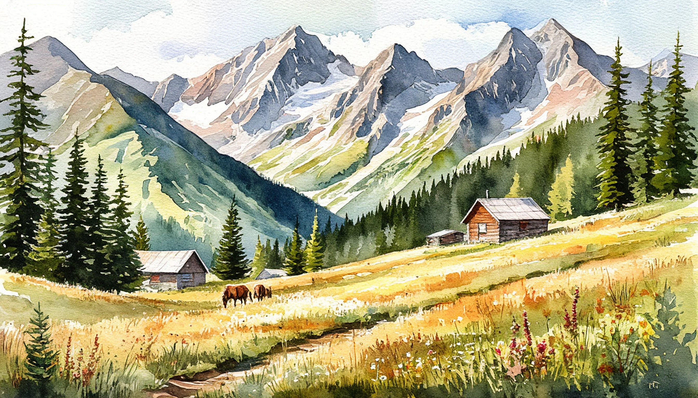

Большое путешествие по Дагестану (6 дней/5 ночей)

Даты тура:
Июнь 2026: 07.06 - 12.06, 14.06 - 19.06, 21.06 - 26.06, 28.06 - 03.07
Июль 2026: 05.07 - 10.07, 12.07 - 17.07, 19.07 - 24.07, 26.07 - 31.07
Август 2026: 02.08 - 07.08, 09.08 - 14.08, 16.08 - 21.08, 23.08 - 28.08, 30.08 - 04.09
Сентябрь 2026: 06.09 - 11.09, 13.09 - 18.09, 20.09 - 25.09, 27.09 - 02.10
Октябрь 2026: 11.10 - 16.10, 25.10 - 30.10
Ноябрь 2026: 01.11 - 06.11, 22.11 - 27.11
Вылет из Москвы
Стоимость тура:
- от 130 000 рублей за двоих*
- *Стоимость зависит от выбранной даты тура, авиаперелета и актуальных тарифов на момент бронирования
По программе:
- - Сулакский каньон
- - Хунзах
- - Гуниб, Гамсутль
- - Дербент
Программа тура:
1 день: Прилет в Махачкалу.
- Трансфер в отель.
- Размещение в отеле Махачкалы.
- Свободное время.
2 день: Сулакский каньон
- Завтрак в отеле. Освобождение номеров.
- Сулакский каньон – один из самых красивых в мире и самый глубокий каньон в Европе. По глубине превосходит даже Гранд-Каньон в Аризоне. Со смотровой площадки в п. Дубки полюбуемся на бирюзовые воды Сулака, насладимся красотой и силой Сулакского каньона. Чиркейская Гидроэлектростанция, которую мы увидим по пути, самая мощная на Северном Кавказе.
- Первая остановка — бархан Сарыкум, уникальный природный памятник и настоящая песчаная пустыня среди гор. Прогулка по бархану, знакомство с природными особенностями и фотостоп. Бархан Сарыкум является уникальным памятником природы Дагестана. Геологами он признан вторым в мире по величине. Крупнее него – бархан под названием «Большой эрг» в пустыне Сахара. А в Европе и Азии нет равного по величине бархану Сарыкум. Вход за доп. плату, ориентировочно 200 руб. Прокатимся с ветерком на катере и получим потрясающие впечатления, сделаем отличные фото.
- Обед в ресторане на одном из лучших форелевых хозяйств Дагестана. На обед будет подана свежевыловленная зажаренная на углях до хрустящей корочки форель. (Возможна замена главного блюда по запросу).
- Побываем в одном из самых интересных мест в Дагестане – комплексе пещер «Нохъо» (за дополнительную плату ориентировочная стоимость 500-700р.).
- Пещеры соединены между собой навесным мостом, который проходит над рекой Сулак. По обеим сторонам моста оборудованы смотровые площадки, откуда открываются захватывающие виды.
- Переезд в горы. Размещение в Гостевых домах.
3 день: Хунзах
- Завтрак в отеле.
- В Дагестане есть множество удивительных мест, одно из которых — селение Хунзах, древняя столица Аваристана и родина известных воинов и поэтов. Сегодня мы отправимся туда, чтобы открыть для себя этот волшебный край.
- Главной достопримечательностью этого места, несомненно, является водопад Тобот — один из самых высоких не только в горном Дагестане, но и на всём Северном Кавказе. Этот водопад, как украшение Хунзахского плато, привлекает внимание своей живописной красотой.
- Рядом с селением раскинулся Цолотлинский каньон, в который с грохотом срываются три речки, создавая каскад водопадов. Здесь же находится смотровая площадка, откуда открывается потрясающий вид на окрестности.
- Прогулка по Матласскому плато раскроет всю красоту дагестанских гор. Мы спустимся к ущелью по каменной лестнице, пройдем под водопадом и полюбуемся на горные вершины. Памятник Хаджи-Мураду напомнит нам о славных временах аварских правителей и воинов.
- Мемориальный комплекс «Белые журавли» в селе Цада создан по мотивам песни «Журавли» на стихи Расула Гамзатова, посвящённый подвигу народов Дагестана.
- - Мастер класс по лезгинке. В мастер-классе по лезгинке — познакомимся с традиционным дагестанским танцем, его историей и основными движениями, а также попробуем исполнить его вместе с местным танцором.
- Обед в кафе из блюд национальной кухни.
- Далее наш путь лежит к Воротам Чудес, так иногда называют Карадахскую теснину. Это невероятно узкий каньон, шириной всего от двух до четырёх метров, а его высота достигает 170 метров. Протяжённость теснины составляет примерно четыре сотни метров.
- Карадахская теснина отличается удивительной красотой. Её причудливые изгибы поднимаются на сотни метров вверх, создавая поистине завораживающее зрелище. Дорога здесь очень узкая, и иногда приходится буквально протискиваться между скалами. В некоторых местах камни нависают над головой, создавая ощущение постоянного движения и напряжения. Свет сюда проникает редко, но, когда это происходит, перед глазами открывается незабываемая картина.
- Размещение в Гостевых домах.
4 день: Гуниб, Гамсутль
- Завтрак в отеле. Освобождение номеров.
- Переезд в легендарный горный аул Гуниб. Это настоящий музей под открытым небом, естественный горно-ботанический сад со своим микроклиматом, растительным и животным миром. С селением Гуниб связана история Кавказской войны. Именно здесь закончилась Большая Кавказская война, когда в 1859 году имам Шамиль сдался в плен генералу Барятинскому. Окрестности рокового аула вдохновляли Айвазовского и других художников.
- Во время экскурсии в Гунибский краеведческий музей вы познакомитесь не только с историей села и бытом жителей Гуниба, увидите редкие экспонаты: стол, за которым завтракал император Александр II, когда посетил Гуниб в 1871 году и медицинские инструменты Николая Ивановича Пирогова, который принимал участие в Кавказской войне. Можно будет почувствовать себя настоящим горцем или горянкой и сделать красивые фото в национальных костюмах.
- Обед из блюд национальной кухни.
- Далее наш путь лежит в знаменитый заброшенный Аул – призрак Гамсутль, расположенный на высоте почти 1720 метров над уровнем моря. Это одно из древнейших поселений Дагестана, и столетия назад здесь находилась ханская башня или крепость, но сейчас в ауле никто не живет, там своя особая атмосфера!
- Расстояние до Гамсутля составляет 3000 метров. 1500 из них проезжаем на транспорте, а другую половину пешком. (тяжелый подъем, требуется физическая подготовка, для лиц 60+ не рекомендуем!)
- Переезд в Дербент / Избербаш. Размещение в отеле.
- Внимание!
- Обычно, ранней весной и поздней осенью если будут плохие погодные условия (дождь, снегопад, камнепад, густой туман) экскурсия в Гамсутль будет заменятся на экскурсию в аул Чох и/или село Салта. Аул Чох является архитектурным музеем под открытым небом. Здесь по-прежнему сохранилась традиционная для горцев архитектура, представленная ступенчатой, как правило, двух или трехэтажной застройкой крутых горных склонов. Хаотичные узкие улочки, желтый цвет природного камня и этажность застройки придают вид Чоху средневекового восточного города. В Гунибском районе рядом с селом Салта расположился необычный Салтинский водопад – единственный подземный водопад в Дагестане. Это уникальное место входит в ТОП-10 природных достопримечательностей Республики Дагестан. С 1983 года является памятником природы регионального значения. Перед вами откроется невероятная картина: сквозь камни, с 20-метровой высоты в ущелье мощным напором врывается водопад, образуя под собой водоем.
5 день: Дербент
- Завтрак в отеле. Освобождение номеров.
- Посещение крепости Нарын-Кала. Экскурсия откроет нам древнюю историю крепости, которая тысячи лет защищала город от нашествия кочевников. Именно здесь проходила часть знаменитого «Шелкового пути». Сохранившаяся для потомков, она является символом мужества и непобедимости народов Закавказья. Входит в список всемирного наследия ЮНЕСКО.
- Прогулка по улочкам Старого города (магалы).
- Внешний осмотр древней Джума мечети. В 733 году в каждом из 9 магалов Дербента было построено по одной мечети. Вместе с этими мечетями была построена большая мечеть для совершения общего пятничного намаза. Мечеть на удивление неплохо сохранилась и не так давно была внесена в список всемирного наследия ЮНЕСКО.
- Девичьи бани. (внешний осмотр).
- Подземное водохранилище X–XI веков.
- Обед из блюд национальной кухни.
- Далее — мастер-класс по приготовлению чуду, традиционного дагестанского блюда. Вы узнаете секреты теста и начинки, а затем сами попробуете приготовить этот кулинарный шедевр.
- Посещение Дербентского рынка и сувенирной лавки.
- Посещение экраноплана «Лунь». Его еще называют «Каспийский монстр» — это советский ударный экраноплан-ракетоносец проекта 903, который по праву можно назвать уникальным экспонатом, не имеющим аналогов в мире.
- Переезд в Махачкалу. Размещение в отеле.
6 день: Махачкала
- Завтрак в отеле. Освобождение номеров.
- Трансфер в аэропорт
В стоимость тура входит:
- - Трансфер: аэропорт – отель – аэропорт;
- - Транспортное обслуживание по программе;
- - Проживание в гостиницах городов и гостевых домах в горах;
- - Питание, завтраки (со второго дня) + обеды на экскурсиях;
- - Экскурсионное обслуживание по программе;
- - Подъем на Гамсутль на транспорте;
- - Входные билеты в музеи;
- - Катание на катере.
- - Мастер класс по изготовлению чуду.
- - Мастер-класс по лезгинке.
Дополнительно оплачиваются (по желанию):
- - Сувениры,
- - Вход на Бархан Сарыкум,
- - Спуск с Гамсутля на транспорте,
- - Вход в пещеры,
- - Ужины
Стоимость тура не зафиксированы и могут быть изменены в большую или меньшую сторону в зависимости от уровня спроса в любой момент.
Время начала экскурсий и их порядок указано ориентировочно.
Фирма-исполнитель оставляет за собой право замены экскурсий без уменьшения общего объема экскурсионной программы.
По вопросам бронирования обращайтесь: